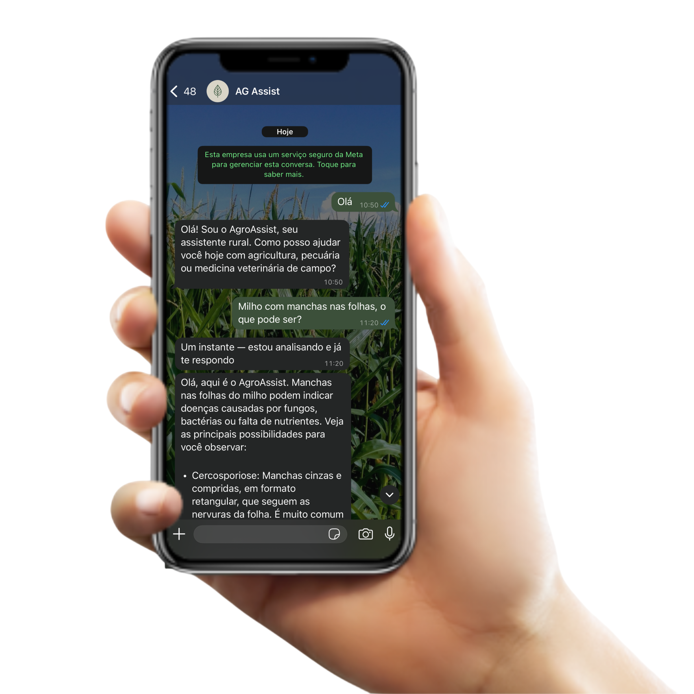

-Photoroom.png)
Orientação prática para lavoura e rebanho, direto no WhatsApp
Tire dúvidas, envie fotos e receba respostas claras para decisões rápidas no campo — também como apoio a quem trabalha no agro (técnicos da agricultura, engenheiros agrônomos, zootecnistas, florestais, consultores, assistência técnica e afins).

Para quem é
Produtor rural
Decisões rápidas no dia a dia da lavoura
Pecuarista
Apoio prático no manejo do rebanho
Profissionais do campo
Técnicos e engenheiros do agro, consultores e equipes de campo: segunda leitura, cálculos, referência e forma clara de explicar ao produtor — sem substituir sua responsabilidade técnica nem as exigências do seu conselho de classe e da legislação
No campo
Resolve dúvidas por mensagem ou foto, onde a internet permitir

Como funciona
Envie uma mensagem no WhatsApp
Descreva o problema ou envie uma foto
Receba orientação em poucos minutos
Benefícios
Respostas simples e diretas
Disponível a qualquer hora
Ajuda na decisão no campo
Apoio a cálculos práticos (doses, áreas, conversões) com base no que você informar
Envio de fotos para análise
Economia de tempo
Não substitui profissional em urgência
Notícias do agro
Carregando notícias…
Planos
Gratuito
R$ 0
- Até 15 análises por mês para testar o serviço
- Fila padrão • mesma base de respostas, com limite mensal
Mensal
R$ 29/mês
- 30 dias de teste grátis ao assinar o mensal — já com análises ilimitadas e prioridade na fila; depois segue a cobrança mensal (combine no WhatsApp)
- Análises ilimitadas — use o quanto precisar no mês
- Prioridade na fila — atendimento mais rápido nos horários de pico
- Texto, fotos e áudios, com respostas detalhadas e no seu contexto
- Orientações com passo a passo quando a dúvida pedir
- Atendimento no WhatsApp que você já usa no dia a dia
Perguntas frequentes
Funciona offline?
Não. O AG Assist é atendido pelo WhatsApp, que depende de internet no celular (dados móveis ou Wi‑Fi) para enviar e receber mensagens, fotos e áudios. Sem conexão, o próprio WhatsApp não entrega nem sincroniza as conversas — não é limitação do serviço, e sim do funcionamento do app.
Preciso instalar outro aplicativo?
Não. Você usa só o WhatsApp que já está no aparelho. Não há app extra nem outro canal obrigatório.
Posso enviar fotos e áudios?
Sim. Pode mandar texto, fotos e áudios na conversa, como em qualquer contato do WhatsApp — inclusive para mostrar folhas, animal, equipamento ou situação no campo.
O WhatsApp pode consumir meus dados móveis?
Sim. Mensagens, imagens e áudios usam a internet do celular (ou Wi‑Fi). O consumo costuma ser pequeno para texto e foto; áudios e imagens maiores usam um pouco mais. Isso segue as regras da sua operadora e do próprio WhatsApp.
Quanto tempo leva para responder?
O tempo varia conforme fila e complexidade da pergunta. No plano Mensal as respostas têm prioridade em relação ao gratuito quando houver muita demanda.
O que está incluso no gratuito e no mensal?
Os mesmos tipos de atendimento (texto, fotos, áudios e nível de detalhe nas respostas). A diferença é o limite de análises por mês no gratuito e o uso ilimitado + fila prioritária no mensal, conforme descrito na seção Planos.
O plano Mensal tem teste grátis?
Sim. Ao assinar o plano Mensal, você conta com 30 dias de teste grátis com análises ilimitadas e prioridade na fila; após esse período entra a cobrança de R$ 29/mês, conforme combinado no WhatsApp.
Ajuda com cálculos no campo?
Sim, para cálculos do dia a dia — por exemplo estimativa de dose ou área, conversão de unidades ou raciocínio a partir dos dados que você mandar (e sempre lembrando de conferir rótulo, bula e legislação). Não substitui receituário agronômico nem decisões que exijam visita técnica ou análises laboratoriais.
Profissionais do agro (técnico, engenheiro, consultor…) podem usar como apoio?
Sim — quem atua no campo ou na consultoria (técnico da agricultura, engenheiro, zootecnista, florestal, consultor, assistência técnica…) pode usar para ganhar agilidade: checagem de raciocínio, sugestão de cálculo, lembrete de boas práticas ou linguagem mais clara para o cliente. Conselho de classe, receituário, ART e a decisão técnica final continuam sendo sua responsabilidade — o AG Assist é apoio por mensagem, não laudo nem parecer formal assinado.
Substitui visita de técnico ou profissional habilitado?
Não. É apoio por mensagem para dúvidas e orientação rápida. Não substitui diagnóstico presencial, documentação oficial da sua área (receituário, laudos, projetos) nem emergência no campo — nesses casos procure um profissional ou serviço adequados na sua região.
Meus dados e conversas ficam seguros?
A conversa ocorre no WhatsApp, que usa a infraestrutura e a criptografia da Meta. Recomendamos não compartilhar senhas nem dados bancários no chat e seguir as boas práticas que você já usa no aplicativo.